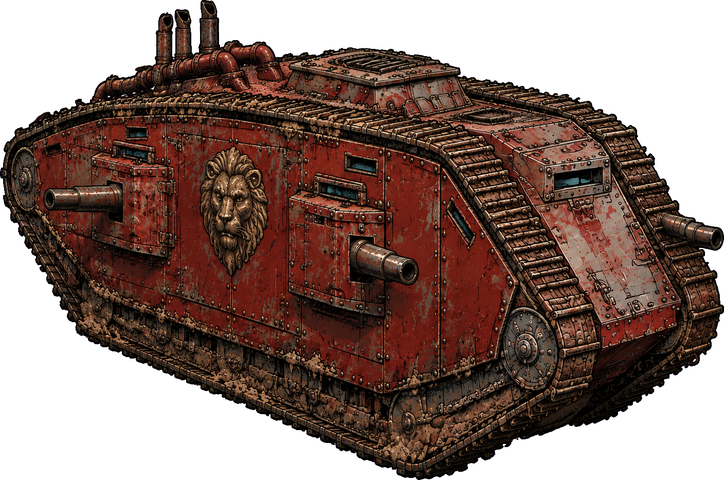
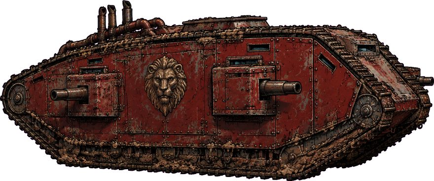

Koloss aus dem Bogen, ohne Farbabgleich

BildKoloss im Spiel (angeglichen)

BildSturmpanzer im Spiel
 Bildmit Spielfilter
Bildmit SpielfilterJe Spalte links das Bild, rechts dasselbe mit dem Filter, den das Spiel auf Kettenfahrzeuge legt (brightness 0,84, contrast 0,92, saturate 0,8, sepia 0,1). Noch nichts neu gemalt.

Bild
BildBildmit Spielfilter| Messwert (deckende Pixel, 0–1) | Koloss ohne Abgleich | Koloss im Spiel | Sturmpanzer | Koloss im Spiel + Filter | Sturmpanzer + Filter |
|---|---|---|---|---|---|
| Helligkeit (Mittel) | 0,209 | 0,161 | 0,200 | 0,127 | 0,159 |
| Glanzlichter (95 %) | 0,517 | 0,448 | 0,553 | 0,348 | 0,431 |
| Kontrast (Streuung) | 0,153 | 0,137 | 0,167 | 0,106 | 0,129 |
| Großflächige Schattierung (Volumen) | 0,070 | 0,061 | 0,099 | 0,047 | 0,076 |
| Sättigung | 0,565 | 0,517 | 0,396 | 0,416 | 0,290 |
| Anteil fast schwarz (< 0,08) | 31 % | 25 % |
Mögliche Wege (noch nicht umgesetzt): Farbabgleich beim Koloss zurücknehmen (wie bei der alten Ansicht in Paket 1), den Spielfilter für den Koloss abschwächen oder die Bordwand neu mit mehr Licht oben/Schatten unten bzw. in Dreiviertelansicht malen lassen.